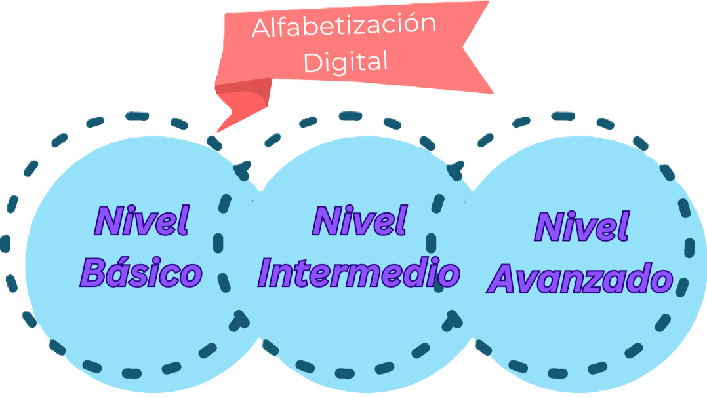

¿Que Aprendere Con Este Sitio Web? |
|
Hola con nuestro sitio web aprenderas sobre la "Alfabetización Digital" que es la habilidad de usar la tecnología de forma correcta y segura. En el nivel básico, aprenderemos a usar dispositivos como computadoras o telefónos. Esto incluye saber cómo navegar por internet, buscar información en páginas web y comunicarnos por las redes sociales, como Facebook o WhatsApp. En el nivel intermedio, empezamos a usar programas más complejos, que son utilizados para trabajos como (Word) o hacer cálculos en (Excel). También aprendemos a cuidar nuestra privacidad en internet, aprender a proteger nuestras contraseñas y saber si la información que encontramos es confiable (segura) o no. En el nivel anvanzado, se aprenderán cosas más difíciles, como la programación de computadoras (para crear sofware, aplicaciones o como esta pagina misma), el análisis de datos (para entender grandes cantidades de información) y cómo reconocer los peligros de internet, como los virus o el robo de datos. Además, en este nivel, se enseña cómo usar la tecnología de forma ética y profesional. |
Con el siguientes contenido aprenderemos la mayoría de información importante sobre el uso adecuado de la tecnología: Nivel Básico, Intermedio y Avanzado Aprendizaje Virtual |
Copyright 2024 Mandanos un mensaje a nuestro Gmail imdigitalstudy@gmail.com
Esta obra está licenciada bajo CC BY-NC 4.0